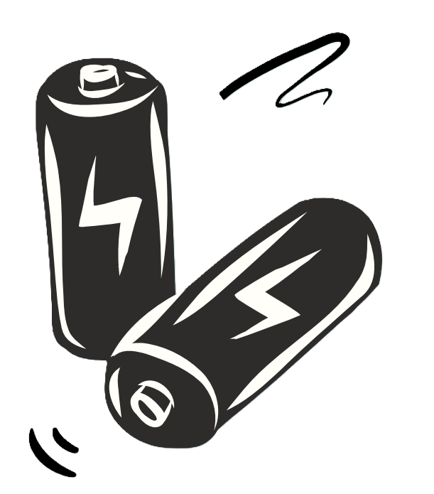

| . |
Production d’énergie La production d’électricité et de chaleur par la combustion de combustibles fossiles est à l’origine d’une grande partie des émissions mondiales. La majeure partie de l’électricité est encore produite par la combustion de charbon, de pétrole ou de gaz, ce qui génère du dioxyde de carbone et de l’oxyde nitreux, puissants gaz à effet de serre qui enveloppent la Terre et retiennent la chaleur du soleil. À l’échelle mondiale, un peu plus d’un quart de l’électricité provient de sources renouvelables (énergie éolienne, énergie solaire et autres) qui, contrairement aux combustibles fossiles, ne rejettent que peu ou pas de gaz à effet de serre ou de polluants dans l’air. |
| . |
Fabrication de produits
Le secteur manufacturier et l’industrie génèrent des émissions, principalement dues à la combustion de combustibles fossiles pour produire l’énergie nécessaire à la fabrication de produits tels que le ciment, le fer, l’acier, les composants électroniques, les matières plastiques, les vêtements et d’autres biens. L’exploitation minière et d’autres processus industriels libèrent également des gaz, tout comme l’industrie de la construction. Les machines utilisées dans les processus de fabrication fonctionnent généralement au charbon, au pétrole ou au gaz et certains matériaux, comme les plastiques, sont fabriqués à partir de produits chimiques issus de combustibles fossiles. L’industrie manufacturière est l’une des principales sources d’émissions de gaz à effet de serre dans le monde. |
| . |
Abattage de forêtsL’abattage de forêts pour faire place à des exploitations agricoles ou à des pâturages, ou pour d’autres raisons, entraîne des émissions. En effet, les arbres, une fois coupés, libèrent le carbone qu’ils ont stocké. Chaque année, environ 12 millions d’hectares de forêt sont détruits. Étant donné que les forêts absorbent le dioxyde de carbone, leur destruction limite également la capacité de la nature à empêcher les émissions dans l’atmosphère. La déforestation, associée à l’agriculture et à d’autres changements d’affectation des sols, est à l’origine d’environ un quart des émissions mondiales de gaz à effet de serre. |
| . |
Utilisation de moyens de transportLes voitures, les camions, les navires et les avions sont pour la plupart alimentés par des combustibles fossiles. De ce fait, les transports constituent une source importante d’émissions de gaz à effet de serre et notamment de dioxyde de carbone. La majeure partie est imputable aux véhicules routiers, en raison de la combustion de produits dérivés du pétrole, comme l’essence, dans des moteurs à combustion interne. Toutefois, les émissions des navires et des avions continuent de croître. Les transports sont à l’origine de près d’un quart des émissions mondiales de dioxyde de carbone liées à l’énergie et les tendances laissent présager une augmentation importante de la consommation d’énergie dans ce secteur au cours des années à venir. |
| . |
Production de denrées alimentairesLa production de denrées alimentaires entraîne des émissions de dioxyde de carbone, de méthane et d’autres gaz à effet de serre de diverses manières, notamment à travers la déforestation et le défrichage des terres pour l’agriculture et le pâturage, la digestion des bovins et des ovins, la production et l’utilisation d’engrais et d’effluents d’élevage pour les cultures, et l’utilisation d’énergie pour faire fonctionner les équipements agricoles ou les bateaux de pêche, généralement au moyen de combustibles fossiles. En raison de tous ces éléments, la production de denrées alimentaires constitue un facteur important du changement climatique. En outre, les activités de conditionnement et de distribution des denrées sont également à l’origine d’émissions de gaz à effet de serre. |